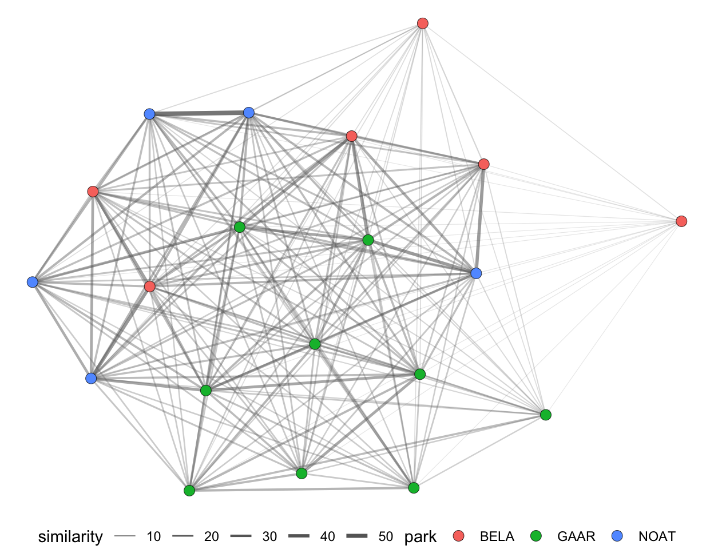
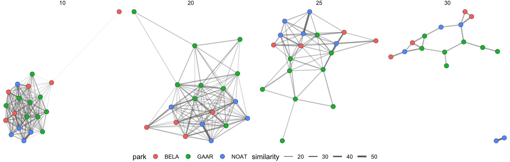

networks

A network is an interesting display because it can show both properties of an entity and also relationships between entities. A network does this using nodes, usually points, and edges, usually lines that connect the notes. Typically, nodes are things and edges are connections between them, which mirrors the underlying data structure. However, there are two distinct sources of such a structure:
Sometimes we build the network. We start with a data matrix (samples for which we have measured many variables) and compute how similar every sample is to every other, then draw an edge wherever two samples are similar enough (see the bit about thresholds, below). Here, an edge means “these two samples resemble each other”. Importantly, in this mode, the user decides how much resemblance is required for two samples to be connected, usually using that threshold I mentioned.
Alternatively, we are sometimes given the network. This could be a list of connections that were actually observed in the world: journeys taken, messages sent, proteins that bind, and so forth. Networks derived from these data typically indicate “this thing interacted with this other thing”.
distances and scaling
To build a network from a set of observations, we first need to calculate how similar each pair of samples are. For this, we use a distance matrix:

First, we need our data set in wide format:
alaska_lake_data %>%
select(-element_type) %>%
pivot_wider(names_from = "element", values_from = "mg_per_L") -> alaska_lake_data_wide
head(alaska_lake_data_wide)
## # A tibble: 6 × 15
## lake park water_temp pH C N P Cl
## <chr> <chr> <dbl> <dbl> <dbl> <dbl> <dbl> <dbl>
## 1 Devil_Mou… BELA 6.46 7.69 3.4 0.028 0 10.4
## 2 Imuruk_La… BELA 17.4 6.44 4.7 0.013 0 1.18
## 3 Kuzitrin_… BELA 8.06 7.45 2 0 0 0.67
## 4 Lava_Lake BELA 20.2 7.42 8.3 0.017 0.001 2.53
## 5 North_Kil… BELA 11.3 8.04 4.3 0.037 0.001 337.
## 6 White_Fis… BELA 12.0 7.82 12.3 0.034 0.006 105.
## # ℹ 7 more variables: S <dbl>, F <dbl>, Br <dbl>, Na <dbl>,
## # K <dbl>, Ca <dbl>, Mg <dbl>Now, we need a distance matrix. Here is the traditional way:
dist(alaska_lake_data_wide[,3:15])
## 1 2 3 4 5
## 2 17.249885
## 3 13.914769 9.825572
## 4 18.650639 12.114748 17.376585
## 5 363.367406 375.484304 376.096169 372.814170
## 6 107.196874 119.469450 120.216457 116.204115 257.046356
## 7 39.939919 43.719116 42.365857 34.754470 375.000861
## 8 19.404912 21.984690 20.063580 18.697259 373.762458
## 9 35.533288 39.789532 38.784007 30.645412 372.279208
## 10 18.962699 14.634495 15.666485 10.483673 375.971844
## 11 18.453129 11.246167 14.445096 6.035171 375.825483
## 12 15.859597 8.463470 6.549584 14.247034 408.973609
## 13 53.990906 57.852872 56.692667 47.946077 375.976344
## 14 27.647239 27.763703 27.745856 19.099653 375.370523
## 15 53.952032 58.544454 57.044065 50.265090 375.483212
## 16 13.653806 15.851229 7.656391 19.617519 375.983281
## 17 14.509806 16.700167 10.740051 19.120889 375.673721
## 18 13.153727 13.931840 8.987793 15.893494 375.157921
## 19 18.520826 10.826147 14.818691 4.351309 375.348981
## 20 13.122339 13.918487 9.649135 14.221515 374.915449
## 6 7 8 9 10
## 2
## 3
## 4
## 5
## 6
## 7 121.114036
## 8 117.766213 26.564153
## 9 117.707763 7.201256 22.418984
## 10 119.608791 30.092744 10.637359 26.116748
## 11 119.365204 33.019096 15.336409 29.255482 5.952777
## 12 130.491702 41.856664 17.229544 37.778483 11.140371
## 13 125.047466 18.551858 43.715031 22.853050 45.370561
## 14 119.711970 17.822205 17.140450 15.116676 15.261002
## 15 124.815436 19.456110 38.576517 21.589961 44.248959
## 16 120.008119 37.645002 16.021790 34.347377 15.155177
## 17 119.635012 35.256225 12.522921 32.181857 13.699739
## 18 118.629445 37.805337 17.533849 34.070348 14.570844
## 19 118.831349 33.976175 16.986590 30.206181 7.697126
## 20 118.308513 35.461496 15.850232 31.733081 12.479645
## 11 12 13 14 15
## 2
## 3
## 4
## 5
## 6
## 7
## 8
## 9
## 10
## 11
## 12 10.180989
## 13 46.940423 57.993866
## 14 16.757819 25.552154 30.739429
## 15 48.524147 57.622278 27.204181 35.158036
## 16 16.018137 9.916751 52.513357 25.306954 51.656812
## 17 15.475985 10.697363 51.133725 23.902339 48.735302
## 18 14.167245 10.455806 52.153491 25.115004 52.172107
## 19 2.178394 11.082962 47.508028 17.698579 49.659940
## 20 12.209922 9.846948 49.759392 22.485011 50.153277
## 16 17 18 19
## 2
## 3
## 4
## 5
## 6
## 7
## 8
## 9
## 10
## 11
## 12
## 13
## 14
## 15
## 16
## 17 5.535921
## 18 7.313364 9.643066
## 19 16.910716 16.591947 14.272415
## 20 7.593005 9.322022 2.664249 12.413960We can also get long-style distance matrices directly from a wrapper function we have called runMatrixAnalyses by specifying analysis = "dist", as below. The scale_variance = TRUE argument does the scaling step for us before the distances are computed.
alaska_dist_long <- runMatrixAnalyses(
data = alaska_lake_data_wide,
analysis = c("dist"),
scale_variance = FALSE,
columns_w_values_for_single_analyte = colnames(alaska_lake_data_wide)[3:15],
columns_w_sample_ID_info = c("lake", "park")
)
## Replacing NAs in your data with mean
head(alaska_dist_long)
## # A tibble: 6 × 7
## sample_unique_ID_sample_1 sample_unique_ID_samp…¹ distance
## <chr> <chr> <dbl>
## 1 Devil_Mountain_Lake_BELA Imuruk_Lake_BELA 17.2
## 2 Devil_Mountain_Lake_BELA Kuzitrin_Lake_BELA 13.9
## 3 Devil_Mountain_Lake_BELA Lava_Lake_BELA 18.7
## 4 Devil_Mountain_Lake_BELA North_Killeak_Lake_BELA 363.
## 5 Devil_Mountain_Lake_BELA White_Fish_Lake_BELA 107.
## 6 Devil_Mountain_Lake_BELA Iniakuk_Lake_GAAR 39.9
## # ℹ abbreviated name: ¹sample_unique_ID_sample_2
## # ℹ 4 more variables: lake_sample_1 <chr>,
## # park_sample_1 <chr>, lake_sample_2 <chr>,
## # park_sample_2 <chr>Let’s look at those distances. Why is North Killeak Lake so distant from everyone? Wasn’t that lake the one with such high chloride?
ggplot(
alaska_dist_long,
aes(x = sample_unique_ID_sample_1, y = sample_unique_ID_sample_2, fill = distance)
) +
geom_tile()
alaska_lake_data %>%
group_by(element) %>%
summarize(
mean_mg_per_L = mean(mg_per_L),
sd_mg_per_L = sd(mg_per_L)
)
## # A tibble: 11 × 3
## element mean_mg_per_L sd_mg_per_L
## <chr> <dbl> <dbl>
## 1 Br NA NA
## 2 C 4.66 2.84
## 3 Ca 18.2 16.4
## 4 Cl 23.1 77.5
## 5 F NA NA
## 6 K 1.01 1.87
## 7 Mg 7.12 8.62
## 8 N 0.0382 0.0567
## 9 Na 12.6 37.1
## 10 P 0.0006 0.00135
## 11 S 5.21 7.03
Yes, chloride is far more abundant that all the elements, and North Killeak Lake has very high chloride. This means that the distances we computed above are essentially controlled by chloride, not by all elements equally. What if we want equal control? The fix is to scale each variable before computing distances: subtract the column’s mean and divide by its standard deviation. Every column then has a mean of 0 and a standard deviation of 1 (these are sometimes called z-scores), so a difference of one standard deviation counts the same whether it is in chloride, phosphorus, pH or water temperature. Base R’s scale() does it like this:
alaska_scaled <- scale(alaska_lake_data_wide[,3:15])
head(round(alaska_scaled, 2))
## water_temp pH C N P Cl S F
## [1,] -0.87 1.32 -0.44 -0.18 -0.44 -0.16 -0.65 0.80
## [2,] 1.29 -1.41 0.02 -0.44 -0.44 -0.28 -0.71 0.06
## [3,] -0.55 0.79 -0.93 -0.67 -0.44 -0.29 -0.70 -0.31
## [4,] 1.85 0.73 1.28 -0.37 0.30 -0.27 -0.66 0.80
## [5,] 0.10 2.08 -0.12 -0.02 0.30 4.05 -0.74 3.38
## [6,] 0.24 1.60 2.69 -0.07 3.99 1.06 -0.72 1.16
## Br Na K Ca Mg
## [1,] -0.22 -0.10 0.10 -0.76 -0.36
## [2,] -0.30 -0.30 -0.37 -1.05 -0.73
## [3,] -0.30 -0.31 -0.44 -1.00 -0.80
## [4,] -0.26 -0.26 -0.24 -0.39 -0.50
## [5,] 3.94 4.03 3.90 0.71 3.55
## [6,] 1.00 1.12 1.32 0.03 1.05We can do that directly in runMatrixAnalysis():
runMatrixAnalyses(
data = alaska_lake_data_wide,
analysis = c("dist"),
scale_variance = TRUE,
columns_w_values_for_single_analyte = colnames(alaska_lake_data_wide)[3:15],
columns_w_sample_ID_info = c("lake", "park")
) %>% ggplot(
aes(x = sample_unique_ID_sample_1, y = sample_unique_ID_sample_2, fill = distance)
) +
geom_tile()
## Replacing NAs in your data with mean
Scaling is a choice, not a law. If every column is in the same units and the large values genuinely matter more to you, then you might deliberately leave the data unscaled. But whenever your columns are in different units, scale first. The same concern comes back whenever we compute distances, including in hierarchical clustering in the next chapter.
threshold networks from data
We build networks from an edge list: a table that lists one row per connection in the network. So, we need to turn the distances into rows of from, to, weight. Fortunately, our long-style distance matrix makes this easy. There is just one trick: distance and similarity are the opposite of one another. A small distance means two samples are alike. But an edge weight is drawn thick when it is large. If you feed raw distance in as the edge weight, your plot will draw the most dissimilar pairs as the most strongly connected: probably not what you want. That is what similarity = 1 / (1 + distance) * 100 is for: it inverts distance into similarity. Whenever you build a network from distances, stop and check which way round your metric runs.
runMatrixAnalyses(
data = alaska_lake_data_wide,
analysis = c("dist"),
scale_variance = TRUE,
columns_w_values_for_single_analyte = colnames(alaska_lake_data_wide)[3:15],
columns_w_sample_ID_info = c("lake", "park")
) -> alaska_dist_long
## Replacing NAs in your data with mean
alaska_edges <- alaska_dist_long %>%
filter(distance > 0) %>%
mutate(similarity = 1 / (1 + distance) * 100) %>%
select(lake_sample_1, lake_sample_2, similarity)
alaska_edges
## # A tibble: 380 × 3
## lake_sample_1 lake_sample_2 similarity
## <chr> <chr> <dbl>
## 1 Devil_Mountain_Lake Imuruk_Lake 21.4
## 2 Devil_Mountain_Lake Kuzitrin_Lake 37.5
## 3 Devil_Mountain_Lake Lava_Lake 22.7
## 4 Devil_Mountain_Lake North_Killeak_Lake 9.34
## 5 Devil_Mountain_Lake White_Fish_Lake 13.7
## 6 Devil_Mountain_Lake Iniakuk_Lake 19.5
## 7 Devil_Mountain_Lake Kurupa_Lake 25.4
## 8 Devil_Mountain_Lake Lake_Matcharak 21.5
## 9 Devil_Mountain_Lake Lake_Selby 23.7
## 10 Devil_Mountain_Lake Nutavukti_Lake 22.5
## # ℹ 370 more rowsWith the edgelist in hand, we can build a network easily with buildNetwork():
net <- buildNetwork(
edgelist = alaska_edges,
node_attributes = select(alaska_lake_data_wide, lake, park)
)
## buildNetwork: every repeated node pair (A->B and B->A) had matching edge attributes, so the network is treated as undirected and 380 edges were collapsed to 190. Set directed = TRUE to keep both directions.
head(net$nodes)
## x y
## Devil_Mountain_Lake 0.6288512 0.21182409
## Imuruk_Lake 0.7044623 0.64857949
## Kuzitrin_Lake 0.4417220 0.04724479
## Lava_Lake 0.3255254 0.82479944
## North_Killeak_Lake 1.0000000 0.75230095
## White_Fish_Lake 0.5413863 1.00000000
## node_name park
## Devil_Mountain_Lake Devil_Mountain_Lake BELA
## Imuruk_Lake Imuruk_Lake BELA
## Kuzitrin_Lake Kuzitrin_Lake BELA
## Lava_Lake Lava_Lake BELA
## North_Killeak_Lake North_Killeak_Lake BELA
## White_Fish_Lake White_Fish_Lake BELA
head(net$edges)
## x y start_node xend
## 1 0.6288512 0.2118241 Devil_Mountain_Lake 0.7044623
## 2 0.6288512 0.2118241 Devil_Mountain_Lake 0.4417220
## 3 0.6288512 0.2118241 Devil_Mountain_Lake 0.3255254
## 4 0.6288512 0.2118241 Devil_Mountain_Lake 1.0000000
## 5 0.6288512 0.2118241 Devil_Mountain_Lake 0.5413863
## 6 0.6288512 0.2118241 Devil_Mountain_Lake 0.0487207
## yend end_node similarity
## 1 0.64857949 Imuruk_Lake 21.403954
## 2 0.04724479 Kuzitrin_Lake 37.549555
## 3 0.82479944 Lava_Lake 22.717833
## 4 0.75230095 North_Killeak_Lake 9.342952
## 5 1.00000000 White_Fish_Lake 13.719374
## 6 0.27097409 Iniakuk_Lake 19.539621These outputs are easy to plot with! buildNetwork() returns node and edge coordinates from a force-directed layout, ready for ggplot. Edges are drawn with geom_segment(), nodes with geom_point(). For buildNetwork(), the edgelist should have node names in columns 1 and 2 (lake_sample_1, lake_sample_2 here). If a third column is present it is treated as the edge weight, and any additional columns are carried through as edge attributes. node_attributes is joined onto the nodes so you can color them by something you know about the samples.
ggplot() +
geom_segment(
data = net$edges,
aes(
x = x, y = y, xend = xend, yend = yend,
linewidth = similarity,
alpha = similarity
),
color = "grey40"
) +
geom_point(
data = net$nodes,
aes(x = x, y = y, fill = park),
shape = 21, size = 3.2, color = "black", stroke = 0.2
) +
scale_linewidth_continuous(range = c(0.2, 1.4)) +
scale_alpha_continuous(range = c(0.15, 0.8)) +
guides(alpha = "none") +
theme_void() +
theme(legend.position = "bottom")
Well, that is a network, but all points are connected, making it a hairball. What we need to do is define, using a threshold, which connections are sufficiently strong to constitute a connection between the two nodes:
net_10 <- buildNetwork(
edgelist = filter(alaska_edges, similarity > 10),
node_attributes = select(alaska_lake_data_wide, lake, park)
)
## buildNetwork: every repeated node pair (A->B and B->A) had matching edge attributes, so the network is treated as undirected and 344 edges were collapsed to 172. Set directed = TRUE to keep both directions.
net_20 <- buildNetwork(
edgelist = filter(alaska_edges, similarity > 20),
node_attributes = select(alaska_lake_data_wide, lake, park)
)
## buildNetwork: every repeated node pair (A->B and B->A) had matching edge attributes, so the network is treated as undirected and 222 edges were collapsed to 111. Set directed = TRUE to keep both directions.
net_25 <- buildNetwork(
edgelist = filter(alaska_edges, similarity > 25),
node_attributes = select(alaska_lake_data_wide, lake, park)
)
## buildNetwork: every repeated node pair (A->B and B->A) had matching edge attributes, so the network is treated as undirected and 120 edges were collapsed to 60. Set directed = TRUE to keep both directions.
net_30 <- buildNetwork(
edgelist = filter(alaska_edges, similarity > 30),
node_attributes = select(alaska_lake_data_wide, lake, park)
)
## buildNetwork: every repeated node pair (A->B and B->A) had matching edge attributes, so the network is treated as undirected and 36 edges were collapsed to 18. Set directed = TRUE to keep both directions.
net_10$nodes$threshold <- 10
net_10$edges$threshold <- 10
net_20$nodes$threshold <- 20
net_20$edges$threshold <- 20
net_25$nodes$threshold <- 25
net_25$edges$threshold <- 25
net_30$nodes$threshold <- 30
net_30$edges$threshold <- 30
net$nodes <- rbind(net_10$nodes, net_20$nodes, net_25$nodes, net_30$nodes)
net$edges <- rbind(net_10$edges, net_20$edges, net_25$edges, net_30$edges)
ggplot() +
geom_segment(
data = net$edges,
aes(
x = x, y = y, xend = xend, yend = yend,
linewidth = similarity,
alpha = similarity
),
color = "grey40"
) +
geom_point(
data = net$nodes,
aes(x = x, y = y, fill = park),
shape = 21, size = 3.2, color = "black", stroke = 0.2
) +
facet_grid(.~threshold) +
scale_linewidth_continuous(range = c(0.2, 1.4)) +
scale_alpha_continuous(range = c(0.15, 0.8)) +
guides(alpha = "none") +
theme_void() +
theme(legend.position = "bottom")
Minor note: notice also that a long-style distance matrix lists every pair twice, once as A to B and once as B to A, with the same distance both times. buildNetwork() spots this: if every repeated pair carries identical values, it treats the network as undirected, keeps one edge per pair, and prints a message saying so. If any repeated pair differs, it keeps every edge. You can override either way with directed = TRUE or directed = FALSE.
data as networks
Everything in the previous section was derived: we computed the edges ourselves from a data matrix and applied a threshold (or not) to define which nodes were connected. Now consider a data structure where each observation itself is an edge: an origin-and-destination table of journeys, a ledger of letters sent between cities, a record of which proteins were observed to bind which, and so forth. In such data sets, the edge list is the raw data. Accordingly, we do not need to choose whether or not to scale or to pick a threshold: there is nothing to pick because the edges are observations.
buildNetwork() already accepts a bare two-column edge list, with weights optional, so no new tooling is needed for handling these sorts of datasets. Let’s look at an example:
us_airports <- read_csv("/Users/bust0037/Documents/Tools/websites/thebustalab.github.io/phylochemistry/sample_data/us_airports.csv")
## Rows: 29 Columns: 7
## ── Column specification ─────────────────────────────────────────────────────────────────────────────
## Delimiter: ","
## chr (5): airport, name, city, state, region
## dbl (2): latitude, longitude
##
## ℹ Use `spec()` to retrieve the full column specification for this data.
## ℹ Specify the column types or set `show_col_types = FALSE` to quiet this message.
us_airports
## # A tibble: 29 × 7
## airport name city state region latitude longitude
## <chr> <chr> <chr> <chr> <chr> <dbl> <dbl>
## 1 ATL Hartsfield… Atla… GA lower… 33.6 -84.4
## 2 ORD Chicago O'… Chic… IL lower… 42.0 -87.9
## 3 DFW Dallas/For… Dall… TX lower… 32.9 -97.0
## 4 DEN Denver Int… Denv… CO lower… 39.9 -105.
## 5 LAX Los Angele… Los … CA lower… 33.9 -118.
## 6 JFK John F. Ke… New … NY lower… 40.6 -73.8
## 7 SFO San Franci… San … CA lower… 37.6 -122.
## 8 SEA Seattle-Ta… Seat… WA lower… 47.5 -122.
## 9 PDX Portland I… Port… OR lower… 45.6 -123.
## 10 MSP Minneapoli… Minn… MN lower… 44.9 -93.2
## # ℹ 19 more rows
passenger_flows <- read_csv("/Users/bust0037/Documents/Tools/websites/thebustalab.github.io/phylochemistry/sample_data/passenger_flows.csv")
## Rows: 192 Columns: 3
## ── Column specification ─────────────────────────────────────────────────────────────────────────────
## Delimiter: ","
## chr (2): origin, destination
## dbl (1): passengers
##
## ℹ Use `spec()` to retrieve the full column specification for this data.
## ℹ Specify the column types or set `show_col_types = FALSE` to quiet this message.
passenger_flows
## # A tibble: 192 × 3
## origin destination passengers
## <chr> <chr> <dbl>
## 1 ANC BET 9290
## 2 ANC FAI 19360
## 3 ANC JNU 14650
## 4 ANC OME 5140
## 5 ANC OTZ 4020
## 6 ANC SIT 5810
## 7 ATL BOS 69040
## 8 ATL CLT 73400
## 9 ATL DEN 58310
## 10 ATL DFW 75820
## # ℹ 182 more rows
air_net <- buildNetwork(
edgelist = passenger_flows,
node_attributes = us_airports
)
## buildNetwork: 95 node pair(s) appear more than once with different edge attributes (e.g. A->B and B->A with different weights), so all 192 edges were kept and the network is treated as directed. Set directed = FALSE to keep one edge per pair (the first occurrence) instead.
ggplot() +
geom_segment(
data = air_net$edges,
aes(
x = x, y = y, xend = xend, yend = yend,
linewidth = passengers,
alpha = passengers
),
color = "grey40"
) +
geom_point(
data = air_net$nodes,
aes(x = x, y = y),
shape = 21, size = 3.2, color = "black", stroke = 0.2
) +
geom_text_repel(
data = air_net$nodes,
aes(x = x, y = y, label = paste(city, state))
) +
scale_linewidth_continuous(range = c(0.2, 1.4)) +
scale_alpha_continuous(range = c(0.15, 0.8)) +
guides(alpha = "none") +
theme_void() +
theme(legend.position = "bottom")
That said, one thing to watch: if A to B and B to A both appear and carry the same values (or no values at all), buildNetwork() will assume the network is undirected and merge them. When direction is part of the data, pass directed = TRUE.
Three things become available that were not available in Part 1:
Direction. An observed edge often has a direction: A sent to B is not the same fact as B sent to A. A distance is always symmetric, so a derived network can never be directed. And in a directed network, the asymmetry is often the finding — a node that sends far more than it receives is doing something structurally different from one that is balanced.
Weight as a count. An edge can carry how many times the thing happened, which is a real quantity in the world, not a transformation of a distance.
Structure. Because the edges are facts rather than similarities, questions about the shape of the graph become meaningful: how many separate components are there, which nodes hold them together, and what breaks if a node is removed.
node summaries: degree and volume
The simplest node-level summary is degree — how many other nodes a node connects to. In base R that is one line over both ends of the edge list:
table(c(edges$from, edges$to))If the edges carry counts, you can also ask for strength, or total volume: group by node and sum the traffic over both ends. That is group_by() and summarise() from the wrangling chapter, applied to a network.
volume is not importance
Here is the lesson this half of the chapter exists for, and it is one you cannot demonstrate on a derived network at all.
The busiest node in a system can be structurally irrelevant, and a very quiet node can be holding the whole thing together.
On a verified passenger-movement network of twenty stations:
- The busiest station carries around 40,000 journeys — 301% more than the runner-up. Delete it, and the network is completely unchanged: two components before, two components after.
- The critical station ranks nineteenth of twenty by volume — nearly the quietest in the system. Delete it and the network splits: two components become three. It is the sole articulation point, with betweenness eight times the next station’s.
Ranking your nodes by how much traffic they carry would put the station that actually matters second from last. This is the same lesson that co-expression analysis exists to teach in biology — you cannot find regulators by ranking expression level — and it has a sharp mathematical reason for living in Part 2 rather than Part 1. In a correlation network, a gene cannot correlate above 1/√2 ≈ 0.707 with two unrelated programmes at once, so genuine connector nodes, and therefore articulation points, are effectively impossible to observe. Only a relational network can show you this.
components and critical nodes
- Components: which sets of nodes can reach each other at all. Counting components before and after removing a node is the cheapest possible test of whether that node is load-bearing, and it needs nothing beyond base R.
- Articulation points and betweenness: the formal version of the same question — which node’s removal disconnects the graph, and which nodes sit on the most paths between other nodes.
interpreting networks
Three cautions, all of which apply whichever kind of network you have.
Layout is arbitrary. The positions of the nodes carry no information. A force-directed layout is a physics simulation run until it settles, and it settles somewhere different every time unless you fix the seed. Two plots of the same graph can look nothing alike, and neither is more correct. Never read distance-on-the-page as distance-in-the-data; the only real content is which nodes are joined.
What an edge means determines what a hub means. This is where the chapter began and it is worth ending on. A central node in a similarity network is the least distinctive sample you have. A central node in an interaction network may be the most important thing in the system. The topology cannot tell you which situation you are in — only knowing where the edges came from can.
Sometimes a network is a hairball hiding a table. A network is the right picture when the connections are the finding. If what you actually want to say is “these five samples have high values and these five have low values”, a network will say it far worse than a bar chart. Before drawing one, ask what a reader is supposed to learn from an edge. If you cannot answer, you want a different plot.
exercises

further reading
Network Analysis and Visualization with R and igraph. Katherine Ognyanova’s widely used workshop notes, covering edge lists, layouts, degree, centrality and community detection, with worked R code throughout.
Network structure and minimum degree. Seidman’s paper introducing k-cores, a durable and easily computed way of describing how densely connected the interior of a network is.
ggraph and tidygraph. Thomas Lin Pedersen’s grammar-of-graphics approach to networks, useful once you want more control over layout and edge drawing than a helper function gives you.